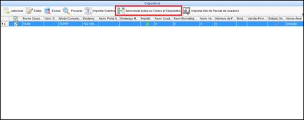
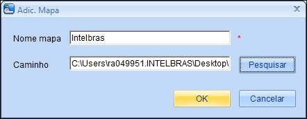
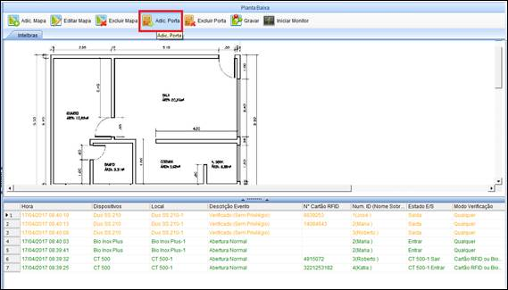
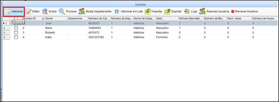
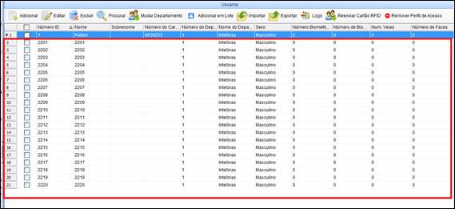
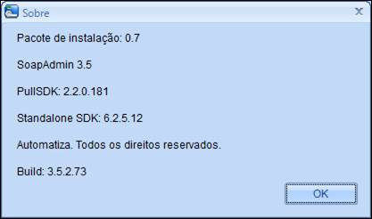

Manual de Instruções SoapAdmin3.5
Versão 5.0 de
15/02/2018
Sumário
2.1
Especificações de Servidor
2.3
Pré-Requisitos e Requisitos Recomendados
3.
Iniciando Software SoapAdmin3.5
4. Primeiro Passo Adicionando Áreas
5. Segundo Passo
Adicionando Dispositivos
6.1. Terceiro Passo Zona
de tempo
6.3
Quinto Passo Perfil de Acesso
6.4
Perfil de Acesso para Visitantes
6.8
Ações Vinculadas a Eventos
6.14
Entradas e Saídas Auxiliares
7.2.1
Cadastro de usuários em lote
9.4.
Gerenciamento do Banco de Dados
1.Apresentação
Parabéns! Você acaba de adquirir um produto com a qualidade Intelbras. O Software SoapAdmin3.5 é um software de Gerenciamento de Dispositivos para Controle de Acesso, entrada / saída de usuários em um ou vários ambientes onde o acesso de pessoas deva ser controlado.
Com o SoapAdmin3.5, é possível configurar privilégios e permissões diferentes para cada perfil de pessoa, tornando o sistema versátil e adequado à realidade da sua empresa. No software, estão disponíveis várias modalidades de relatórios gerenciais que variam de dia, semana e mês.
Todo esse controle e gerenciamento está a sua disposição gratuitamente através do site da Automatiza www.automatiza.com.br , basta seguir os passos descritos abaixo para poder desfrutar do máximo de controle e segurança oferecido pelo software SoapAdmin3.5.
1. No seu navegador web, digite o endereço http://www.automatiza.com.br .
2. Na página principal, selecione a opção Produtos
Imagem 1. Opção
Produtos site Automatiza.
3. Na nova tela de Produtos, selecione a aba Controle de Acesso / Software.
Imagem 2. Opção
Softwares na aba Controle de Acesso.
4. Por fim, clique sobre a opção SOFTWARE SOAPADMIN-VERSÃO 3.5 e na nova janela, na aba Suporte e Download, clique sobre o link Software e Instalação e aguarde o processo de download terminar.
Imagem 3. Download do pacote para instalação do Software SoapAdmin 3.5
O software SoapAdmin3.5 é habilitado a gerenciar controladoras da linha CT500 e os dispositivos Stand Alone NEO, DUO, Bio Inox Plus e SS411E. Divididos por tipo de SKD, exemplificados na tabela abaixo:
|
Nome do Dispositivo |
Tipo de SDK |
|
NEO SS 410 / NEO SS 420 |
Disp. STDSDK |
|
DUO SS 210 / SS 220 |
Disp. STDSDK |
|
Bio Inox Plus SS 311E |
Disp. STDSDK |
|
SS 420 / SS 420 MF |
Disp. STDSDK |
|
DUO SS 230 / DUO SS 230 MF |
Disp. STDSDK |
|
IBPROX SS 120 |
Disp. STDSDK |
|
Bio Inox Plus SS 311 MF |
Disp. STDSDK |
|
SS 610 |
Disp. STDSDK |
|
SS 710 |
Disp. STDSDK |
|
SS 411E |
Disp. PullSDK |
|
SS 320 / SS
320 MF |
Disp. PullSDK |
|
SS 411E |
Disp. PullSDK |
|
Série CT 500 (1P/1PB, 2P/2PB, P/4PB |
Controladora para 1 porta, 2 portas
e 4 portas. |
Tabela 1. Tipos de Dispositivos de Controle de Acesso.
Após o download do software, acompanhe as orientações de Instalação disponíveis no tópico a seguir.
2. Instalação
2.1 Especificações de Servidor
Observe abaixo as especificações mínimas de configuração que o servidor que irá armazenar o banco de dados do software SoapAdmin3.5 deverá ter para o seu correto funcionamento.
As especificações mínimas do servidor para o correto funcionamento do software. Para processadores mais antigos este produto pode ficar bastante lento.
|
Quantidade de Dispositivos |
Configuração do servidor |
|
Até 50 |
·
4 GB de memória
RAM ou mais; ·
Processador de 3
GHz ou superior. Preferencialmente dual core; ·
10 GB de espaço livre em disco. (Para
instalação, não considerando o crescimento da base de dados); ·
Placa de rede com capacidade de 100 mbps ou mais; ·
Net Framework 3.0 / 3.5. |
Tabela 2. Configurações
do Servidor.
Observação: Para processadores mais antigos este produto não funciona de maneira estável e pode apresentar lentidão ou travamento.
Importante: O espaço de 10GB livres necessário, refere-se apenas ao espaço ocupado pela instalação do software, não considerando o tamanho do banco de dados utilizada.
2.2 Processo de Instalação
Após o processo de download do pacote de instalação do software executado no tópico 1 anterior, é necessário instalar o pacote no servidor, para isso, execute o processo descrito abaixo:
1. Dê um duplo clique sobre o ícone executável do software Setup.exe.
2. Na nova janela, escolha o idioma para Instalação e clique em OK.
Imagem 4. Setup de
instalação.
3.
Uma
nova tela surgirá. Nesta tela, clique em Avançar.
Imagem 5. Tela inicial
do Assistente de Instalação.
4. No próximo passo é necessário aceitar os termos Contrato de Licença do software. Após a leitura, clique na opção Eu aceito e na sequência em Avançar.
Imagem 6. Contrato de
Licença do software.
5. Na próxima tela, será demonstrado onde serão instalados os arquivos do pacote de instalação do software. Nesta tela, clique em Avançar.
Imagem 7. Local de
instalação do software.
6. Na nova janela, o Assistente de Instalação, irá demonstrar o processo de criação do ícone de atalho para o software. Nesta tela clique em Avançar.
Imagem 8. Atalho para o
software.
7. Na nova tela, é necessário definir onde será armazenado o backup de redundância do banco de dados do software. Este backup é uma cópia duplicada do backup padrão do software. Após a definição clique em Avançar.
Imagem 9. Definição do
armazenamento do Banco de Dados.
8. Por fim, clique na opção Instalar na nova tela do Assistente de Instalação.
Imagem 10. Confirmação
de Instalação do Software.
9. Acompanhe os processos abaixo e selecione Avançar, Instalar e Concluir nas novas telas que surgirem.
Imagem 11. Progresso de
instalação.
Imagem 12. Instalação do
Driver de Biometria Digital.
Imagem 13. Instalação do
Driver de Biometria Digital.
Imagem 14. Conclusão de
Instalação do Driver de Biometria Digital.
10. Ao final do processo de Instalação, selecione a opção Sim, desejo reiniciar o computador agora e depois em Concluir.
Imagem 15. Conclusão de
Instalação do Software SoapAdmin3.5.
2.3 Pré-Requisitos e Requisitos Recomendados
Para um bom funcionamento do
software SoapAdmin3.5 em conjunto com os dispositivos de controle de acesso, é
recomendado alguns pré-requisitos e requisitos que devem ser atendidos:
· Configurações Recomendadas:
o Processador de 3 GHz ou superior, preferencialmente dual core;
o 1 GB de espaço livre em disco (Para instalação, não considerando o crescimento da base de dados).
o 4 GB de memória RAM ou mais.
o Placa de rede com capacidade de 100 Mbps;
o Para um melhor desempenho, o ciclo de operação (escrita/leitura) de cada componente deve ser levado em consideração.
o
Windows
7 (32 bits e 64 bits), Windows 8 (32 bits e 64 bits) e Windows 10 (32 bits e 64
bits).
·
Pré-Requisitos:
o O NET Framework deve ser previamente instalado.
3. Iniciando Software SoapAdmin3.5
Após o processo de Instalação ter sido concluído, é necessário fazer o login de usuário no dispositivo. Para isso, siga os passos abaixo:
Após ter feito a instalação do software, deve-se abri-lo para iniciar seu gerenciamento. Para isso, siga os passos abaixo:
1.Incialmente, dê um duplo clique no ícone do de atalho criado pelo software SoapAdmin 3.5 na área de trabalho de seu computador. Conforme a figura abaixo:
Imagem 16. Ícone de
atalho do software SoapAdmin3.5.
2. Digite Admin para logar como Operador padrão do sistema, nos campos demonstrados na figura abaixo
Operador padrão: admin
Senha padrão: admin
Imagem 17. Tela de login
no software.
3. Na janela principal, estão apresentadas em ordem de prioridades, as principais funções que devem ser executadas para a correta configuração do Sistema de Controle de Acesso.
Imagem 18. Tela de
Navegação do software.
A ordem de configurações obedece o exposto abaixo. Esta ordem é importante, pois estabelece os condições nececessárias para os posteriores vínculos entre as diversas funções do sofwtare, tornando assim os relatórios de gerenciamento de Controle de Acesso mais completo e abrangentes.
1- Adicionar Áreas: Opção disponível em Dispositivos, sua função é mapear as diversas áreas da empresa ou organização que devam ser monitoradas e controladas pelo Sistema de Controle de Acesso.
2- Adicionar Dispositivo: Opção disponível em Dispositivos, sua função é inserir no software o dispositivo ou dispositivos que serão utilizados pelo Sistema de Controle de Acesso, podendo variar em diferentes tipos, tal qual exemplificado no tópico 1. Apresentação deste Manual.
3- Adicionar Zonas de Tempo: Opção disponível em Controle de Acesso, sua função é determinar os horários em que o Sistema de Controle de Acesso estará disponível para Acessos de usuários dentro de um horizonte semanal. Bem como, vincular aos esses horários aos respectivos dispositivos que compõem o Sistema de Controle de Acesso bem como seus usuários. O Software dispõe de uma Zona de Tempo padrão que abrange 24H disponível semanalmente.
4- Adicionar Feriados: Opção disponível em Controle da Acesso, sua função é mapear todos os feriados existente em um horizonte anual, bem como, aqueles que são recorrentes, tais como Natal e Primeiro do ano. Posteriormente, também é possível atrelar estes feriados aos dispositivos do Sistema de Controle de Acesso, bem como configurar exceções de permissões de acessos entre o banco de usuários.
5- Configuração de Portas: Opção disponível em Controle de Acesso, sua função é determinar o modo como a Porta controlada irá funcionar através do respectivo dispositivo instalado a ela, parâmetros como tempo de abertura de porta, métodos de autenticação para acesso, zona de tempo habilitada, etc, são configuradas nesta função.
6- Perfil de Acesso: Opção disponível em Controle de Acesso, sua função é criar um Perfil de acesso que deverá ser vinculado à uma Zona de Tempo criada anteriormente. Neste momento, serão vinculados também os respectivos dispositivos ao perfil criado, bem como determinados usuários do banco de dados do sistema, esta avaliação é feita pelo Operador Administrador do sistema que é quem gerencia o Sistema de Controle de Acesso.
7- Departamentos: Opção disponível um Usuários, sua função é mapear os diferentes departamentos ou setores da organização, para possibilitar o vínculo de cada usuário cadastrado ao seu respectivo departamento.
8- Usuários: Opção disponível em Usuários, esta função permite que sejam inseridos os usuários que acessam os ambientes controlados pelo Sistema de Controle de Acessos, nesta função, também é possível cadastrar os métodos de autenticação preferenciais para cada perfil, bem como vínculos de Perfis de Acesso criados previamente e informações administrativas do usuário.
9- Relatórios de Eventos: Opção disponível em Relatórios, esta função possibilita criar relatórios dos eventos gerados durante o tempo de operação do Sistema de Controle de Acesso, também é possível gerar relatórios personalizados de acordo com a necessidade da empresa bem como os eventos de Exceção as regaras criadas e configuradas anteriormente.
4. Primeiro Passo Adicionando Áreas
1. Este é o primeiro passo após a instalação do Software SoapAdmin3.5, aqui serão mapeadas todas as áreas da empresa que se deseja controlar. Após logar no software Selecione a opção Áreas, localizada em Dispositivos e selecione Adicionar. Como demonstrado na figura abaixo:
Imagem 19. Tela de
visualização de Áreas.
2. Na nova janela, digite ao nome da área a ser adicionada, o ID desta área (Numeral sequencial), deve-se vincular a nova área a área principal já criada anteriormente na metodologia de um Organograma. Por fim, clique em OK para gerar a nova área.
Imagem 20. Adicionando
Áreas.
Observação: O software já traz de fábrica uma Área raiz cadastrada, de nome Área Name, esta área não pode ser excluída, contudo, é possível editá-la para o nome que faça mais sentido a real necessidade do cliente. Para Isso, selecione a área na tela inicial de visualização das áreas, e clique em Editar e então repita os passos descritos no tópico acima.
Importante: A área raiz não possui vínculos com nenhuma área principal acima dela,
para esta área, o campo Área Principal não é preenchido. Nesta área o seu ID
padrão é representado pelo numeral (1). Ao final da edição, clique em OK para
salvar as modificações.
Imagem 21. Edição de
Área Raiz.
3. Após adicionar e editar todas as Áreas necessárias, é possível visualizar o Organograma de áreas da empresa ou organização, para isso, na tela de visualização de áreas, clique sobre o botão Vis. Organograma.
Imagem 22. Visualização
de Vis. Organograma.
4. Caso deseje adicionar, editar ou Excluir alguma das áreas, será possível também através da nova janela que se abrirá, feitos os devidos ajustes, clique no botão Retornar para sair.
Imagem 23. Visualização
de Organograma.
Observação: As áreas são demonstradas em ordem de vínculos de hierarquia, do mais importante para as restantes áreas.
Importante: Para excluir uma das áreas existentes (exceto a área raiz), basta
selecionar a área desejada e clicar sobre o botão Excluir na visualização do
organograma ou na tela inicial de áreas, uma mensagem de texto será exibida, perguntando
se deseja confirmar a exclusão. Em caso afirmativo, clique em sim, do contrário
clique em não na caixa de texto.
Imagem 24. Confirmação
de exclusão de área.
5. É possível exportar as áreas cadastradas para um arquivo externo nas extensões (xls Excel), (PDF) e (txt Bloco de notas), para isso, na tela de visualização das áreas, clique sobre o botão Exportar, na nova janela, selecione o nome, extensão e local de armazenamento do arquivo e por fim, clique em Salvar para concluir ou Cancelar para voltar à tela de visualização de áreas.
Imagem 25. Botão Função
Exportar.
Imagem 26. Diretório de
Exportação de áreas.
6.
Ainda
na função Áreas é possível conferir as últimas movimentações e alterações
efetuadas, para isso, clique sobre o botão Logs para verificar a lista de
modificações, bem como, o usuário no software responsável pela alteração. Para
retornar à tela de visualização de áreas, clique no botão Retornar na nova
janela que se abrirá.
Imagem 26. Botão Logs.
Imagem 27. Lista de
Logs.
5. Segundo Passo Adicionando Dispositivos
Após criar as devidas áreas, é o momento de adicionar os dispositivos que farão parte do Sistema de Acesso. Na tabela abaixo estão listados os tipos modelos de dispositivos e seus respectivos tipos de SDK.
|
Nome do Dispositivo |
Tipo de SDK |
|
NEO SS 410 / NEO SS 420 |
Disp. STDSDK |
|
DUO SS 210 / SS 220 |
Disp. STDSDK |
|
Bio Inox Plus SS 311E |
Disp. STDSDK |
|
SS 420 / SS 420 MF |
Disp. STDSDK |
|
DUO SS 230 / DUO SS 230 MF |
Disp. STDSDK |
|
IBPROX SS 120 |
Disp. STDSDK |
|
Bio Inox Plus SS 311 MF |
Disp. STDSDK |
|
SS 610 |
Disp. STDSDK |
|
SS 710 |
Disp. STDSDK |
|
SS 411E |
Disp. PullSDK |
|
SS 320 / SS
320 MF |
Disp. PullSDK |
|
SS 411E |
Disp. PullSDK |
|
Série CT 500 (1P/1PB, 2P/2PB, P/4PB |
Controladora para 1 porta, 2 portas
e 4 portas. |
Tabela 2. Tipos de Dispositivos compatíveis com o software.
Existem duas formas de adicionar os dispositivos no sistema. São elas (Dispositivos STDSDK e Dispositivos PullSDK). Confira as particularidades de cada uma delas abaixo:
·
Adicionar
Dispositivos STDSDK:
1- Na tela inicial da função Dispositivos, clique sobre o botão Adicionar para digitar as informações pertinentes do dispositivo a ser adicionado.
Imagem 28. Tela inicial
Dispositivos.
2- Na nova janela, preencha as informações da aba Parâmetros Básicos, observando na tabela 2 acima, o Tipo de Controlador de Acesso que será adicionado.
Imagem 29. Adicionando
dispositivo.
6. Digite o endereço de IP Padrão do equipamento que pode ser encontrado no respectivo manual do dispositivo que se pretende adicionar, para comunicações TCP/IP, ou o endereço RS485 para dispositivos deste padrão de comunicação, vincule também área que este dispositivo pertence, cadastrada no Tópico Primeiros Passos Adicionando Áreas.
Importante:
Verifique o padrão de
comunicação disponível em seu dispositivo antes de adicioná-lo ao software.
3- Durante o preenchimento, para a garantir o correto funcionamento do dispositivo, marque a opção Excluir dados do Dispositivo ao Adicionar que é apresentado com letras na cor vermelha.
Importante:
Não marque esta opção caso
já possua usuários e eventos cadastrados no seu dispositivo, caso contrário,
serão excluídos.
4- Após o preenchimento das informações, clique no botão Teste de Conexão para validar a comunicação com o Dispositivo.
Imagem 30. Testando conexão.
5- Clique no Botão Gravar e Continuar para adicionar mais de um dispositivo ou clique no botão OK para salvar o Dispositivo e finalizar o processo de cadastro.
·
Adicionar
Dispositivos PullSDK:
1. Os equipamentos do tipo Disp. PullSDK e as controladoras para 1, 2 e 4 portas, podem ser encontradas na rede sem a necessidade de inserção manual do endereço de IP das mesmas, através do botão Procurar Dispositivos disponível em Dispositivos.
Imagem 31. Procurar Dispositivos.
Imagem 32. Procurando Dispositivo.
A lista de equipamentos será exibida na nona janela acima, basta
selecionar o dispositivo e na sequencia clicar sobre o botão Adicionar.
Importante: Caso os dispositivos tenham o mesmo número de IP, é necessário mudar o
endereço de IP após adicioná-lo, selecionando o Dispositivo adicionado e
clicando na aba Mais, disponível no canto superior direto da tela de
visualização de dispositivos e na sequência, selecionar a opção Modificar
Endereço IP.

Imagem 33. Modificando endereço de IP.
2. Na nova janela, preencha as informações da aba Parâmetros Básicos. Vincule também área que este dispositivo pertence, cadastrada no Tópico Primeiros Passos Adicionando Áreas.
Imagem 34. Adicionando
Dispositivo PullSDK.
3. Durante o preenchimento, para a garantir o correto funcionamento do dispositivo, marque a opção Excluir dados do Dispositivo ao Adicionar que é apresentado com letras na cor vermelha.
Importante:
Não marque esta opção caso
já possua usuários e eventos cadastrados no seu dispositivo, caso contrário,
serão excluídos.
4. Clique no Botão Gravar e Continuar para adicionar mais de um dispositivo ou clique no botão OK para salvar o Dispositivo e finalizar o processo de cadastro.
·
Demais
configurações comuns a ambos os tipos de dispositivos:
1. Na tela de visualização dos
dispositivos é possível Editar ou Excluir os dispositivos cadastrados. Para
isso, basta clicar sobre os respectivos botões após selecionar o dispositivo na
tela de visualização.
Imagem 35. Editando ou
Excluindo Dispositivos.
Importante:
É possível procurar
dispositivos diretamente na tela de visualização dos mesmos. Para isso, clique
sobre o botão Procurar, logo ao lado do botão Excluir. Contudo, lembre-se
de alterar o endereço de IP do dispositivo adicionado, caso ele seja igual ao
endereço de IP do dispositivo que se deseja adicionar. Esta função só está
disponível para Dispositivos tipo Disp. PullSDK e Controladoras de 1,2 e 4 portas.
2. Na função Dispositivos, é possível importar eventos gerados durante a operação de Controle de Acesso, ou seja, trazer para o banco de dados do software, os eventos que se encontram armazenados nos dispositivos. Para isso, selecione o dispositivo na tela de visualização e clique sobre o botão Importar Eventos.
Imagem 36. Importação de
Eventos.
Importante:
Esta função funcionará
para dispositivos que não tenham sido zerados antes de serem adicionados ao
Software e Já possuam um histórico de eventos.
3. Na nova janela, é possível selecionar quais informações devem ser importadas. São elas: Importar Registros Novos, Importar todos Registros ou Excluir Registros após Importar. Esta última, exclui da memória do dispositivo todos os eventos após importa-los para o banco de dados do software. Marque a opção desejada e clique sobre o botão Importar para executá-la e acompanhe o progresso das informações. Ou clique em Retornar para voltar à tela de visualização dos dispositivos.
Imagem 37. Importando
Eventos.
4.
Da
mesma forma, é possível sincronizar todas as informações configuradas no software
para os dispositivos. Para isso, basta selecionar o dispositivo da tela de
visualização e clicar sobre o botão Sincronizar todos os Dados p/Dispositivo.

Imagem 38. Sincronização
de Dados com Dispositivo.
5. Na nova janela, clique sobre o botão Sincronizar e acompanhe o progresso das informações. Ao final, clique sobre o botão Retornar para voltar à tela de visualização dos dispositivos.
Imagem 39. Sincronizar
dados do software com dispositivo.
6. Ainda na função Dispositivos, é
possível importar as informações parcialmente dos usuários cadastrados. Para
isso, selecione o dispositivo e em seguida clique sobre o botão Importar info Parcial de Usuários.
Imagem 40. Importando
informações de usuários.
7. Na nova janela, selecione as informações que se deseja importar e na sequencia clique sobre o botão Importar e acompanhe o progresso das informações. Ao fim do processo, clique sobre o botão Retornar para voltar à tela de visualização dos dispositivos.
Imagem 41. Selecionando
informações para importar.
Observação: É possível importar todas as informações de usuários do dispositivo. Para isso, clique sobre o botão Importar todas as info de Usuários. Acompanhe o progresso das informações e clique em Fechar ao final para retornar à tela de visualização de dispositivos ou aguarde o tempo decrescente até que a tela feche sozinha.
Imagem 42. Listando
todas as informações de usuários.
8. A função Dispositivos, ainda traz a aba Mais, disponível na barra superior de funções à direita dentro de uma seta indicativa
Imagem 43. Localização
da aba Mais em dispositivos.
9. Dentro da aba Mais, uma nova coluna de funções será aberta e a descrição de cada uma delas pode ser verificada pela tabela abaixo:
|
Função |
Descrição |
|
Desabilitar |
Torna o dispositivo selecionado
Inativo |
|
Habilitar |
Torna o dispositivo selecionado
Ativo |
|
Sincronizar Hora |
Ajusta a hora do dispositivo à hora
do software |
|
Modificar endereço de IP |
Altera o endereço de IP dos dispositivos
já adicionados |
|
Fechar Saída Auxiliar |
Altera de estado as saídas
auxiliares do dispositivo |
|
Modificar senha de comunicação |
Altera a senha de comunicação do
dispositivo com o software |
|
Alterar limiar de identificação por
Biometria Digital |
Altera a taxa de falsa aceitação da
biometria digital nos dispositivos |
|
Modificar TX de Comunicação |
Altera o valor dos pacotes de dados
trocados entre o dispositivo e o software |
|
Logs |
Traz todas as informações de alterações
de configurações feita pelo Operador no Software |
|
Sincronizar Modificações para o
dispositivo |
Ajusta as informações modificadas
nos dispositivos |
|
Exportar |
Exporta para Excel, PDF ou TXT a
lista de dispositivos adicionados. |
|
Importar informações do Cartão SD |
Traz para o software as informações
de dispositivo contidas no cartão de memória SD. |
|
Configuração RS485 Mestre-Escravo |
Configura o mestre e o escravo para
dispositivos conectados por esse padrão de comunicação interligados. |
|
Importar dados via USB |
Traz para o banco de dados do
software as informações de eventos e usuários do dispositivo através da
conexão USB. |
|
Exportar dados via USB |
Exporta para um Pen Drive as
informações do banco de dados do software de usuários e eventos dos
dispositivos cadastrados. |
|
Reiniciar |
Reinicia o dispositivo selecionado. |
Tabela 3. Descrição das
funções da aba Mais.
Imagem 44. Funções da
aba Mais.
6. Controle de Acesso
Neste momento, entramos nas funções de configuração do Sistema de Controle de Aceso propriamente dito, nesta seção, estaremos abordando os tópicos: Zona de Tempo, Feriados, Configuração de Porta, Perfil de Acesso, Configuração Wiegand, Intertravamento, AntiPassback, Ações Vinculadas a Eventos, Abertura Temporizada Acesso Combinado, Monitoramento, Planta Baixa, Nome da Leitora e Entradas e Saídas Auxiliares.
6.1. Terceiro Passo Zona de tempo
Zona de tempo é o intervalo de tempo no qual os usuários terão acesso ao ambiente controlado pelo dispositivo. O software SoapAdmin 3.5, já traz de uma Zona de Tempo padrão de fábrica que abrange 24 horas acessível. Esta Zona de tempo não pode ser excluída. De modo que é possível adicionar outras para os devidos vínculos posteriores. Para isso, siga os passos descritos abaixo:
1. Selecione a opção Zona de Tempo, disponível em Controle de Acesso. Na tela inicial, clique no botão Adicionar.
Imagem 45. Tela inicial
de Zona de Tempo.
2. Na nova janela, insira o Nome da Zona de Tempo, a Descrição e preencha os tempos distribuídos por cada dia da semana. Também é possível configurar o horário de 3 perfis de feriados na zona de tempo criada. Ao final, clique em OK para criar a Zona de Tempo.
Imagem 46. Criando Zona
de Tempo.
3. É possível também Editar ou Excluir as Zonas de Tempo criadas. Para isso, clique sobre os botões Editar ou Excluir após a seleção da zona de tempo na tela inicial, faça as modificações e clique em OK para confirmar as modificações.
Importante:
A função Zona de tempo,
possibilita a criação de no máximo três intervalos de tempo para cada Zona
criada. Dispositivos STD SDK (Duo SS 210, Duo SS 220, NEO SS 410, NEO SS 420, Bio Inox Plus SS 311E, Bio Inox
Plus SS 311 MF, SS 420, SS 420 MF, Duo SS 230, Duo SS 230 MF, SS 610, SS 710, IBProx SS 120), permite apenas uma zona de tempo com até
três períodos por usuário.
Equipamentos Pull SDK, tais como (SS 320, SS
320 MF, SS 411E e a linha de controladoras CT 500), não possuem esta restrição.
6.2. Quarto Passo Feriados
Nesta função, é possível criar os feriados que impactarão o Sistema de Controle de Acesso, bem como vinculá-lo ao tipo de feriado que foi criado na Zona de Tempo (1, 2 ou 3). Para isso, basta seguir os passos descritos abaixo:
1. Na tela inicial de visualização dos feriados, clique no botão Adicionar.
Imagem 47.Tela inicial
de Feriados.
2. Na nova janela, crie os feriados desejados, sempre os vinculando aos tipos de feriados 1,2 ou 3, bem como os parâmetros Off-Line para a posterior sincronização com os dispositivos do Sistema de Controle de Acesso.
Imagem 48. Criando
Feriados.
Observação: O campo Recorrente deve ser marcado quando o feriado em questão se repete anualmente.
3. Após as devidas configurações, clique em OK para confirmar ou em Cancelar para retornar à tela de visualização inicial de Feriados.
Importante:
Após a criação dos
Feriados faça o sincronismo das informações para os dispositivos que compõem o
Sistema de Controle de Acesso. O número máximo de feriados criados é 24.
Importante:
A função Feriado está
disponível apenas para os dispositivos que trabalham no protocolo Pull SDK, tais como série (CT 500, SS 411E, SS 320 e SS 320
MF).
Imagem 49. Sincronizando
Informações.
4. Também é possível editar ou excluir um dos feriados criados anteriormente, para isso, basta selecionar o feriado em questão e clicar sobre os botões Editar ou Excluir na tela inicial de visualização dos feriados. Sempre lembrando de sincronizar as informações com o dispositivo ao final dos ajustes.
Imagem 50. Excluindo ou
Editando Feriados.
6.3 Quinto Passo Perfil de Acesso
Para que o Sistema de Controle de Acesso, funcione corretamente, é necessário adicionar os Perfis de Acesso dos dispositivos e usuários. Para isso, siga as instruções descritas abaixo:
1. Na tela de visualização da função Perfil de Acesso, clique sobre o botão Adicionar
Imagem 51. Tela de
visualização de Perfis de Acesso.
2. Na nova Janela, entre com o nome do novo perfil de acesso a ser criado e utilizando as Setas centras de navegação, adicione os dispositivos e usuários que farão parte do Perfil de Acesso em questão, selecionando-os na esquerda e transferindo-os para o campo da direita. Também é necessário vincular a zona de tempo que o Perfil de acesso pertence. Ao final das configurações clique em Ok e sincronize as informações com os dispositivos do sistema.

Imagem 52. Atribuindo
Dispositivos e usuários ao Perfil de Acesso.
3. É possível também editar ou excluir os perfis de acesso criados, para isso, selecione o Perfil de Acesso selecionado e clique sobre os botões Editar e Excluir na tela de visualização dos perfis de acesso.
Imagem 53. Editando ou
Excluindo Perfil de Acesso.
4. Ainda na tela de visualização é possível excluir a permissão dos usuários dentro do perfil de acesso criado. Para isso, basta clicar sobre o botão Perfil de Acesso do Usuário na tela de visualização do Perfil de Acesso. Na nova janela selecionar os usuários que se deseja excluir e clicar no botão Excluir Privilégios. Depois será necessário sincronizar as informações com todos os dispositivos pertencentes ao Sistema de Controle de Acesso.

Imagem 54. Perfil de
Acesso do Usuário.
Imagem 55. Excluindo
Usuários do Perfil de Acesso.
Importante: A função perfil de acesso, para os equipamentos SDT SDK (Duo SS 210,
Duo SS 220, NEO SS 410, NEO SS 420, Bio Inox Plus SS
311E, Bio Inox Plus SS 311 MF, SS 420, SS 420 MF, Duo
SS 230, Duo SS 230 MF, SS 610, SS 710, IBProx SS
120), funciona como a função Grupo de acesso, disponível na configuração
direta pelo dispositivo stand alone. De modo que, não
será permitido que o usuário possua mais de um perfil de acesso associado ao
seu cadastro. Caso isso ocorra, o último perfil de acesso cadastrado,
sobrescreverá o perfil de acesso criado anteriormente.
Equipamentos Pull SDK, tais como (SS 320, SS 320 MF, SS 411E e a linha
de controladoras CT 500), não possuem esta restrição.
6.4 Perfil de Acesso para Visitantes
É possível também criar um perfil de acesso para o cadastro de visitantes. Para isso, basta clicar sobre o Check box que marca a opção Usar em Visitas, para que este perfil fique visível na tela de cadastro de visitantes para o posterior vínculo dos mesmos.
Imagem 56. Perfil de
Acesso de Visitantes.
Importante:
após habilitar o perfil de
acesso aos visitantes, associe os dispositivos de controle de acesso que
pertencerão a esse perfil de acesso para posteriores vínculos dos cadastros de
visitantes.
6.5 Configuração de Portas
Nesta seção são configuradas as portas do Sistema de Controle de Acesso, configurações tais como: Tempo de abertura, sensor de fechadura, método de autenticação, entre outras podem ser configuradas. Para isso, siga os passos descritos abaixo:
1. Na tela inicial de visualização de configuração de porta, serão exibidas, todas as portas referentes aos dispositivos previamente adicionados. Para modificar os seus parâmetros, selecione a porta na tela inicial e clique sobre o botão Editar.
Imagem 57. Lista de
portas adicionadas.
2. Na nova janela, é possível alterar o Nome da Porta a Zona de tempo Padrão, o Período de Porta Aberta, o Modo de Verificação, o Tipo de Sensor da fechadura, bem como o Atraso do Sensor que é o tempo que o dispositivo leva para acionar um alarme quando a porta fica aberta. Tempo de abertura que é o tempo em segundos que a porta ficará aberta. Entre outras configurações.

Imagem 58. Opções de
configuração de Porta.
3. A descrição das funções setadas, estão descritas na tabela abaixo:
|
Função |
Descrição |
|
Nome Disp. |
Nome do dispositivo adicionado
anteriormente |
|
Num. Porta |
Número da porta controlada pelo
dispositivo |
|
Nome Porta |
Nome da Porta controlada pelo
dispositivo (Editável) |
|
Zona de Tempo Padrão |
Zona de tempo na qual o dispositivo
está vinculado. |
|
Período de Porta Aberta |
Período pré-determinado em que o
dispositivo abre a porta independente da zona de tempo a que pertença. |
|
Modo de Verificação |
Método de Autenticação que o
dispositivo estará disponível para leitura durante a operação do Sistema de
Controle de Acesso |
|
Senha de Coação |
Senha definida para ser utilizada em
momentos de necessidade, a mesma abre a porta e dispara um alarme |
|
Senha de Emergência |
Senha definida para ser utilizada no
momento de emergência, exemplo Incêndio, terremoto, ou outras emergências a serem
definidas pelo operador do Sistema. |
|
Configuração Wiegand |
Configuração do padrão de
comunicação Wiegand para o funcionamento do Leitor Escravo que se comunique
neste padrão. |
|
Tipo Sensor |
Sensor de Fechadura (Nenhum, Normalmente
Aberto ou Normalmente Fechado) |
|
Atraso do Sensor |
Tempo em segundos configurado de
espera entre a abertura da porta e o acionamento do sensor de porta. |
|
Bloquear ao fechar |
Altera o status da porta de aberta
para fechada. |
|
Marcar Ponto |
Registra o horário e dia do evento |
|
Tempo de Abertura |
Tempo em que a porta permanece
destrancada. |
|
Int. entre Identificação |
Intervalo entre as leituras |
|
Vezes de erros por Alarme |
Quantidade de tentativas de acesso
negadas para disparo de alarme |
|
Alarme de Porta Aberta |
Alarme disparado ao deixar a porta
aberta |
|
Permitir SRB |
Habilita controle externo da porta
(Não disponível nesta versão) |
Tabela 4. Descrição de
configurações de porta.
4. É possível também marcar algumas opções finais que visam replicar as configurações aos demais integrantes do Sistema de Controle de Acesso.
Imagem 59. Replicando
configurações aos demais dispositivos do sistema.
Importante: Algumas das funções descritas na tabela 4 acima, podem não estar
disponíveis conforme o dispositivo adicionado. Por isso, é fundamental a
leitura do manual de usuário do seu dispositivo para garantir que o mesmo
possui a função que se deseja configurar.
Observação: A função Configurações Wiegand também está disponível na aba lateral do software SoapAdmin 3.5 logo abaixo da opção Perfil de Acesso dentro das funções de Controle de Acesso.
Imagem 60. Configurações
Wiegand.
Nesta nova janela, é possível entrar com todos os parâmetros em bits que se referem à taxa de comunicação Wiegand e em seguida confirma-los clicando em OK. Contudo, estes parâmetros só devem ser alterados com a utilização no manual de usuário dos respectivos leitores que serão utilizados.
Imagem 61. Configurando
o padrão Wiegand.
6.6 Intertravamento
Esta função possibilita criar uma situação de interdependência entre duas ou mais portas de uma Controladora (CT 500). Onde em estando aberta uma das portas configuradas na função, as demais permanecerão fechadas até que a porta aberta feche também, possibilitando ao usuário então proceder a porta subsequente do sistema. Para configurar o sistema, siga os passos descritos abaixo:
1. Na tela de visualização do Intertravamento, clique sobre o botão Adicionar.
Imagem 62. Adicionando
Intertravamento.
2. Na nova Janela, selecione a controladora que estará configurada para o Intertravamento no campo Dispositivos e selecione uma das opções para a Regra de Intertravamento.
Imagem 63. Configurando
Intertravamento.
3. Após selecionar a Regra de Intertravamento, clique sobre o botão OK e Sincronize as informações com o Dispositivo.
4. As opções disponíveis para setar a Regra de Intertravamento são:
|
Opção de Regra |
Descrição |
|
Intertravamento entre Porta 1 e 2 |
Porta 2 fechada enquanto porta 1 aberta e vice-versa. |
|
Intertravamento entre Porta 3 e 4 |
Porta 4 fechada enquanto porta 3 aberta e vice-versa. |
|
Intertravamento entre Porta 1-2 e 3-4 |
Porta 2 fechada enquanto porta 1 aberta e vice-versa. Porta 4 fechada enquanto porta 3 aberta e vice-versa. |
|
Intertravamento entre Porta 1,2 e 3 |
Porta 2 e 3 fechada enquanto porta 1 aberta e vice-versa. |
|
Intertravamento entre Porta 1,2,3 e 4 |
Porta 2,3 e 4 fechada enquanto porta 1 aberta e vice-versa. |
Tabela 5. Descrição de
configurações de Intertravamento.
5. É possível também editar ou excluir o Intertravamento adicionado anteriormente. Para isso, clique sobre o botão Editar ou Excluir na tela de visualização do Intertravamento, após selecionar o perfil criado. Feitas as modificações, clique em OK e sincronize as informações com o dispositivo.
Imagem 64. Editando ou
excluindo regra de Intertravamento.
Importante:
Só é possível adicionar
uma regra de Intertravamento por Dispositivo pertencente ao Sistema de Controle
de Acesso.
Importante:
Esta função está
disponível apenas para controladoras da linha CT 500 e restrita ao número de no
mínimo duas e no máximo 4 portas.
6.7 AntiPassback
Esta função visa controlar a entrada e a saída do usuário de modo que, uma vez que o usuário entrou em uma área específica, ele não poderá entrar novamente sem que tenha saído primeiramente. Esta função é bem versátil e pode ser configurada entre portas de um mesmo ambiente ou entre ambientes independentes. Para configurar esta função, siga os passos descritos abaixo:
1. Na tela de visualização do AntiPassback, clique sobre o botão Adicionar
Imagem 65.Adicionando AntiPassback.
2. Na nova Janela escolha o tipo de dispositivo a ser configurado a regra de AntiPassBack, na sequência defina a regra que será aplicada bem como o Estado inicial do dispositivo, este último, aplicável apenas para dispositivos que não sejam da linha CT 500. No exemplo abaixo as duas próximas imagens demonstram a utilização de uma controladora CT 500 e de Um Dispositivo SDTSDK.
Imagem 66. Configurando
Regra para CT 500.
|
Regra AntiPassBack |
Descrição |
|
Porta 1 e 2 |
Quando faço uma operação na porta 1, tenho que fazer a próxima operação
na porta 2, não importando o sentido. Quando faço uma operação na porta 2, tenho que fazer a próxima operação
na porta 1, não importando o sentido. |
|
Porta 3 e 4 |
Quando faço uma operação na porta 3, tenho que fazer a próxima operação
na porta 4, não importando o sentido. Quando faço uma operação na porta 4, tenho que fazer a próxima operação
na porta 3, não importando o sentido. |
|
Porta 1 e 2 Porta 3 e 4 |
Quando faço uma operação na porta 1, tenho que fazer a próxima operação
na porta 2, não importando o sentido. Quando faço uma operação na porta 2, tenho que fazer a próxima operação
na porta 1, não importando o sentido. Quando faço uma operação na porta 3, tenho que fazer a próxima operação
na porta 4, não importando o sentido. Quando faço uma operação na porta 4, tenho que fazer a próxima operação
na porta 3, não importando o sentido. |
|
(Entre Porta 1 e 2) e (Entre Porta 3 e 4) |
Quando faço uma operação na porta 1 ou 2, tenho que fazer a próxima
operação na porta 3 ou 4, não importando o sentido. Quando faço uma operação na porta 3 ou 4, tenho que fazer a próxima
operação na porta 1 ou 2, não importando o sentido. |
|
Entre Porta 1 e 2 ou 3 |
Quando faço uma operação na porta 1, tenho que fazer a próxima operação
na porta 2 ou 3, não importando o sentido. Quando faço uma operação na porta 2 ou 3, tenho que fazer a próxima
operação na porta 1, não importando o sentido. |
|
Entre Porta 1 e 2 ou 3 ou 4 |
Quando faço uma operação na porta 1, tenho que fazer a próxima operação
na porta 2 ou 3 ou 4, não importando o sentido. Quando faço uma operação na porta 2 ou 3 ou 4, tenho que fazer a
próxima operação na porta 1, não importando o sentido. |
|
Entre Leitores da Porta 1 |
Regra válida apenas entre aos leitores de entrada e saída da Porta 1. |
|
Entre Leitores da Porta 2 |
Regra válida apenas entre aos leitores de entrada e saída da Porta 2. |
|
Entre Leitores da Porta 3 |
Regra válida apenas entre aos leitores de entrada e saída da Porta 3. |
|
Entre Leitores da Porta 4 |
Regra válida apenas entre aos leitores de entrada e saída da Porta 4. |
Tabela 6. Descrição das
Regras AntiPassBack para controladoras CT 500.
Imagem 67. Configurando
Regra para Dispositivo SDTSDK.
|
Regra AntiPassBack |
Descrição |
|
Sem AntiPassback |
AntiPassback desativado |
|
AntiPassback de Saída |
Regra Válida para eventos de Saída |
|
AntiPassback de Entrada |
Regra Válida para eventos de Entrada |
|
AntiPassback de Entrada / Saída |
Regra Válida para eventos de Entrada e Saída |
Tabela 7. Descrição das
Regras AntiPassback para Dispositivo STDSDK.
3. Também é necessário setar o estado do dispositivo SDTSDK, que poderá ser (Nenhum, Entrada ou Saída). Após as configurações, clique no botão OK e sincronize as informações com os dispositivos do Sistema.
Importante:
Caso o estado do
dispositivo seja setado para Nenhum a regra de AntiPassback definida será ignorada pelo dispositivo.
6.8 Ações Vinculadas a Eventos
Esta função permite configurar ações vinculadas a determinados tipos de eventos. Estes eventos, serão gatilhos parta por exemplo, abrir uma porta, fechar uma porta, abrir ou fechar uma saída auxiliar do dispositivo que por sua vez irá acionar um sistema externo tal qual um sistema de alarme. Para configurar esta função, siga os passos descritos abaixo:
1. Selecione o botão Adicionar na tela de visualização de Ações Vinculadas a Eventos.

Imagem 68. Configurando
Ações Vinculadas a Eventos.
2. Na nova janela, insira o nome do Ação criada, selecione o dispositivo que receberá a configuração, o Gatilho que acionará o Evento de Exceção e por fim as configurações para o Tipo de Saída, Endereço de Saída e o Tipo de Ação.
Imagem 69. Configurando
Ações Vinculadas a Eventos.
3. Abaixo estão Listados os tipos de Gatilhos disponíveis, bem como, os Endereços de Entrada, Tipos de Saída, Endereço de Saída e Tipo de Ação.
|
Gatilhos |
|
|
Abertura Acesso Combinado
(Biometria Digital) |
Abertura Senha Coação |
|
Abertura Acesso Combinado (Cartão
RFID) |
Abertura Senha Emergência |
|
Abertura Biometria Digital |
Abertura Temporizada (Cartão RFID +
Biometria Digital) |
|
Abertura Biometria Digital de
Coação |
Abertura Temporizada (Biometria
Digital) |
|
Abertura Cartão RFID + Biometria
Digital |
Acesso combinado (Biometria
Digital) |
|
Abertura Durante Modo de Passagem |
Acesso Combinado (Cartão RFID +
Biometria Digital) |
|
Abertura Normal |
Acesso Combinado (Cartão RFID) |
|
Abertura Remota |
Acesso Negado |
|
Abertura Remota Normal |
AntiPassback |
|
Biometria Digital Expirada |
Biometria Digital não Registrada |
|
Cartão RFID Expirado |
Cartão RFID não Registrado |
|
Entrada Auxiliar Aberta |
Entrada Auxiliar Fechada |
|
Falha ao Fechar Porta durante Modo
de Passagem |
Fechamento Remoto |
|
Fim Modo Passagem |
Fora da Zona de Tempo (Cartão RFID) |
|
ID durante Modo de Passagem
(Biometria Digital) |
ID durante modo de passagem (Cartão
RFID) |
|
Intertravamento |
Intervalo de Marcação muito curto |
|
Intervalo de Marcação muito curto
(Biometria Digital) |
Porta Aberta |
|
Porta Aberta Corretamente |
Porta Arrombada |
|
Porta Fechada Corretamente |
Porta fora Horário (Biometria
Digital) |
|
Porta fora Horário (Botoeira) |
Senha Inválida |
|
Verificação Abertura Temporizada |
Zona de Tempo Inválido |
|
Endereço de Entrada |
|
|
Qualquer |
Disp. A, B, C (CT 500) |
|
Tipo de Saída |
|
|
Porta |
Saída Auxiliar |
|
Endereço de Saída |
|
|
Porta- (1) |
Porta- (2) |
|
Tipo de Ação |
|
|
Fecha |
Abre |
|
Deixa aberto |
|
Tabela 8. Descrição das
Opções de Configurações para os Eventos.
Importante: Ao selecionar a opção Abre também será necessário definir o tempo em
segundos do Intervalo. Este tempo é configurável de 1 a 254 segundos.
Importante: Os tipos de saídas bem como o número de portas e os endereços de saída,
podem mudar de acordo com o Tipo do dispositivo adicionado ao Sistema de
Controle de Acesso.
6.9 Abertura temporizada
A função Abertura Temporizada permite ao operador do Sistema de Controle de Acesso, criar uma situação em que a porta controlada, estará aberta independentemente da zona de tempo cadastrada para esta porta. Para isso, além de adicionar a porta em que será aplicada esta configuração, é necessário incluir ao perfil os usuários que servirão de gatilho para o início desta função. Por exemplo: Uma recepção de uma empresa deverá permanecer com sua porta de entrada aberta durante o expediente comercial. Contudo, o gatilho para o início desta condição é o acesso via Cartão RFID do usuário que trabalha na recepção, daí para frente a porta permanecerá aberta até que a função seja desabilitada no monitoramento em tempo real, voltado a porta a ser controlada pela Zona de Tempo vinculada a ela anteriormente.
Para configurar esta condição, é necessário seguir os passos descritos abaixo:
1. Clique no botão Configuração na tela de visualização da Abertura Temporizada.
Imagem 70. Configurando
Abertura Temporizada.
2. Na nova janela, clique no botão Adicionar e uma nova janela surgira, onde será possível adicionar a porta que será configurado a condição de Abertura Temporizada, bem como a zona de tempo vinculada à mesma. Após as definições, clique em OK e sincronize as informações com o dispositivo.
Imagem 71. Adicionando
Porta à Temperatura Temporizada.
3. Na sequência, é necessário adicionar os usuários que pertencem a esta condição e que servirão de gatilho para o início da condição de Abertura Temporizada. Para Isso, selecione a porta adicionada no item anterior e clique no botão Adicionar Usuários. Na nova janela que surgirá, selecione os usuários do banco de dados onde os seus eventos de entrada, servirão de Gatilhos para o início da condição, clicando sobre as setas de navegação centrais, de modo que passarão do lado esquerdo para o lado direito da janela. Ao final clique em OK e sincronize as informações com o Dispositivo.
Imagem 72. Adicionando
Usuários à Abertura Temporizada.
4. Na função Monitoramento é possível verificar os registros que serão gerados quando um dos usuários gatilhos acessar a porta configurada. Note que caso algum outro usuário que não esteja configurado como gatilho para condição de Abertura Temporizada, tentar o acesso, o mesmo terá o acesso liberado, contudo a porta se comportará regida pela Zona de Tempo Padrão, voltando a fechar após ter decorrido o Tempo de Abertura de Porta configurado. Após um dos usuários Gatilho, efetuar o acesso à porta, a mesma permanecerá aberta até que a condição Modo de Passagem esteja Desabilitado.
Imagem 73. Eventos de
Abertura Temporizada.
Importante: Esta função está disponível apenas para a linha de controladora CT500. Para desabilitar esta função, basta selecionar a opção Desabilitar Modo de Passagem Entrada, disponível em Fechar Portas Selecionadas ou Fechar Todas as Portas. Uma vez desabilitado, a porta funcionará com base na zona de tempo padrão configurada previamente.
6.10 Acesso Combinado
Esta função possibilita cadastrar uma condição que para a porta abrir, será necessário a autenticação de 1 ou mais usuários de pelo menos dois grupos diferentes. Sendo que esta autenticação dependerá do tipo de chave cadastrada ao perfil do usuário e à configuração do método de autenticação na regra do acesso combinado.
1. Para configurar esta etapa, primeiramente, selecione o botão Configuração na janela de visualização do Acesso Combinado.
Imagem 74. Configurando
Acesso Combinado por Grupos.
2. Na nova Janela, crie os Grupos que irão compor a combinação posterior, bem como, vincule o Dispositivo que receberá a configuração e o modo de verificação que os usuários que estiverem vinculados a estes grupos deverão ter para acessar o ambiente controlado.
Imagem 75. Adicionando
Grupos para Combinação.
3. Na nova Janela Insira o no do Grupo, a descrição do mesmo, o método de autenticação para a entrada, o número do grupo que está sendo criado e o Nível de Acesso do grupo, ou seja, a Zona de tempo a qual o grupo pertence.
Imagem 76. Adicionando
Primeiro Grupo.
Importante:
A escolha do Método de
autenticação, deve ser coerente às formas de autenticação disponíveis no
dispositivo utilizado no Sistema de Controle de Acesso. Verifique o Manual do
dispositivo antes de configurar.
Importante:
A lista completa dos
métodos de autenticação pode ser consultada no tópico Configuração de Portas.
Imagem 77. Adicionando
Segundo Grupo.
Importante:
A escolha do Método de
autenticação, deve ser coerente às formas de autenticação disponíveis no
dispositivo utilizado no Sistema de Controle de Acesso. Verifique o Manual do
dispositivo antes de configurar.
Importante:
A lista completa dos
métodos de autenticação pode ser consultada no tópico Configuração de Portas.
4. Após a criação dos grupos, é necessário incluir os respectivos usuários aos seus respectivos grupos. Para isso, selecione um dos grupos criados e clique no botão Adicionar Usuários. Na nova janela, selecione os usuários que desejar e atribua-os ao grupo utilizando as setas de navegação central. Por fim clique em OK para confirmar a inclusão e repita a operação para os demais grupos existentes.
Imagem 78. Atribuindo
usuários ao grupo.
5.
Uma vez criado os grupos e vinculados os seus
respectivos usuários, é o momento de criar a Combinação de acesso por grupo.
Para isso, clique sobre o botão Adicionar na tela de visualização do Acesso
Combinado.

Imagem 79. Criando o
Acesso Combina entre grupos.
6. Na nova Janela, selecione o dispositivo que receberá a configuração, o nome desta combinação, bem como o seu número identificador, os grupos e a quantidade de usuários de cada grupo que serão necessários para que a combinação de acesso ocorra. Feitas as configurações, clique no botão OK e sincronize as informações com os dispositivos.
Imagem 80. Combinação de
acesso entre grupos
6.11 Monitoramento
Esta função, possibilita monitorar todos os dispositivos que compõem o Sistema de Controle de Acesso, apresentando em tempo real, todos os eventos gerados em qualquer uma das portas controladas pelos dispositivos do sistema, sejam estes eventos de acesso liberado, negado, coação, entre outros. Note na figura abaixo a exemplificação da tela de monitoramento, nela, é possível, filtrar os dispositivos que se deseja ver, tendo como opções, Todos os dispositivos ou dispositivos individuais, selecionando-os através das caixas de opções marcadas com o número 1 na imagem.
1. Uma vez selecionado, é necessário clicar no botão Inicia Monitor marcado com o número 2 na imagem abaixo.
Imagem 81. Iniciando
Monitoramento em tempo Real.
2. Na imagem abaixo está representado a tela de monitoramento em tempo real onde estão representados todos os dispositivos do Sistema de Controle de Acesso e seus eventos estão descritos no enquadramento do quadro vermelho.
Imagem 82. Eventos do
Sistema de Controle de Acesso.
3. Para parar o monitoramento, basta clicar sobre o botão Parar Monitor e os eventos não serão mais exibidos, ficando a tela semelhante à demonstrada na imagem 78.
6.12 Planta Baixa
Semelhante ao Monitoramento, a função Planta Baixa, permite que o usuário carregue uma planta de um ambiente ou organização onde as portas controladas pelo sistema estarão representadas graficamente. Para isso, siga o procedimento descrito abaixo:
1. Na tela de visualização da função Planta Baixa, clique sobre o botão Adic. Mapa.
Imagem 83. Tela inicial
função Planta Baixa.
2. Na nova Janela, insira o nome do mapa que está carregando e clique em Pesquisar para carregar o arquivo de imagem, na sequência, clique no botão OK para exibir o mapa carregado.

Imagem 84. Carregando
mapa para sistema.
3. Caso deseje, clique sobre os botões Editar Mapa ou Excluir Mapa para editar ou excluir o mapa carregado.
4. Clique no botão Adic. Porta para posicionar as portas disponíveis no Sistema de Controle de Acesso.

Imagem 85. Mapa de
Planta Baixa carregado.
5. Na nova Janela, selecione o dispositivo que deseja adicionar para que as portas disponíveis sejam exibidas no mapa. Clicando sobre o dispositivo no mapa, arreste-o e posicione-o sobre a área que representa fisicamente o local que está sendo controlado pelo dispositivo. Repita este processo para quantos dispositivos for necessário. Por fim, clique no botão Iniciar Monitor para que as portas online, sejam exibidas no mapa carregado.
Imagem 86. Portas
posicionadas no mapa.
6. Clique sobre o botão Gravar para salvar as posições das portas no mapa ou Excluir Porta para excluir algumas das portas adicionadas anteriormente. Para parar o monitoramento, clique sobre o botão Parar Monitoramento.
6.13 Nome da Leitora
Esta função permite editar o nome das leitoras adicionadas no Sistema de Controle de Acesso que estão instaladas nas portas controladas pelos dispositivos. Para isso, siga o processo abaixo:
1. Na tela inicial de exibição das Leitoras, selecione a leitora que deseja editar e clique no botão Editar.
Imagem 87. Tela Inicial
de Edição de Leitoras.
Importante:
É possível editar apenas
uma leitora por vez.
2. Na nova janela, altere o nome da leitora e clique no botão OK para confirmar. Sincronize as informações com os dispositivos.
Imagem 88. Editando Nome
da Leitora.
3. Repita este processo para todas as leitoras que desejar alterar a nomenclatura. Caso deseje, clique sobre o botão Registro e será exibido todas as modificações realizadas por outros operadores e pelo seu perfil no Sistema de Controle de Acesso.
Imagem 89. Registros de
Logs.
Importante:
Função disponível apenas
para dispositivos CT500.
6.14 Entradas e Saídas Auxiliares
Da mesma forma que na função Nome da Leitora, esta função permite que se altere a nomenclatura das Entradas e Saídas Auxiliares do dispositivo. Para isso, siga os procedimentos abaixo:
1. Na tela inicial de exibição das Entradas e Saídas auxiliares, selecione a Entrada ou Saída Auxiliar que deseja editar e clique no botão Editar.
Imagem 90. Tela inicial
de Entradas e Saídas Auxiliares.
Importante:
É possível editar apenas
uma Entrada ou Saída Auxiliar por vez.
2. Na nova janela, altere o nome da Entrada ou Saída Auxiliar e clique no botão OK para confirmar. Sincronize as informações com os dispositivos.
Imagem 91. Editando Nome
de Entradas e Saídas Auxiliares.
3. Repita este processo para todas as leitoras que desejar alterar a nomenclatura. Caso deseje, clique sobre o botão Registro e será exibido todas as modificações realizadas por outros operadores e pelo seu perfil no Sistema de Controle de Acesso.
Imagem 92. Registro de
logs de Entradas e Saídas Auxiliares.
Importante:
Função disponível apenas
para dispositivos CT500.
7. Usuários
Nesta seção, são cadastrados e configurados os usuários que comporão o banco de dados do Sistema de Controle de Acesso, bem como seus departamentos no qual pertencem. A seguir, estão listados os tópicos que tratarão dos seguintes assuntos respectivamente: Cadastro de Departamentos, Cadastro de Usuários e Cadastros dos Métodos de Autenticação (Cartão RFID, Senha, Biometria Digital, etc). Conforme a disponibilidade do Dispositivo Controlador de Acesso adicionado ao Sistema.
7.1 Sexto Passo Departamentos
Esta função possibilita o cadastro dos departamentos presentes na organização ou empresa, estes departamentos, serão vinculados aos usuários posteriormente. Note que já existe um Departamento Cadastrado de fábrica no Software de nome Company name, este é um departamento raiz e não poderá ser excluído, pode apenas ser editado. Para fazer a edição deste departamento e criar novos, siga os passos listados abaixo:
1. Na tela inicial dos Departamentos, selecione o departamento raiz e clique em Editar.
Imagem 93. Tela Inicial
Departamentos.
2. Na nova janela, altere o Nome do Departamento e deixe o campo Depto Principal em branco (----). Neste campo será feito o vínculo dos demais departamentos criados posteriormente. Clique em OK para confirmar as modificações
Imagem 94. Editando
Departamento Raiz.
3. Para criar novos Departamentos, Clique no Botão Adicionar da tela inicial dos departamentos. Na nova janela, preencha o nome do novo departamento, altere seu número identificador para (2) (número preenchido sequencialmente) e por fim, no campo Depto Principal, vincule-o ao departamento raiz, ou seja (Intelbras no exemplo).
Imagem 95. Adicionando
novos departamentos.
4. Repita o processo acima para criar novos departamentos sempre que necessário, e vincule-os conforme a necessidade de sua organização ou empresa.
5. Caso queira excluir algum dos departamentos criados, selecione-o na tela inicial e clique no botão Excluir.
6. É possível clicar nos botões Exportar ou Importar para salvar os departamentos criados em Excel ou txt ou mesmo trazer uma planilha de departamentos previamente criados em um destes dos formatos para dentro do Sistema de controle de Acesso.
7. Por fim, após criar e vincular todos os departamentos da organização ou empresa, é possível visualizar o organograma do mesmo clicando no Botão Organograma na tela inicial.
Imagem 96. Selecionando
Organograma.
8. Na nova janela, estarão representados por ordem, todos os departamentos criados anteriormente e devidamente vinculados. Nesta janela também é possível Adicionar, Editar, Excluir e Retornar para a tela inicial.
Imagem 97. Visualizando
Organograma.
7.2 Sétimo Passo Usuários
Para cadastrar usuários e vinculá-los aos departamentos criados anteriormente, siga os passos descritos abaixo:
1. Na tela inicial de usuários, clique em Adicionar para inserir um novo cadastro de usuário.

Imagem 98. Tela Inicial
Usuários.
2. Na nova janela, será necessário preencher as informações de 3 abas do cadastro. São elas: Parâmetros Básicos, Detalhes e Perfil de Acesso.
3. Na aba de Parâmetros Básicos, entre com as informações de Nome, Sobrenome, Sexo, é possível cadastrar também uma senha numérica no campo Senha (4 a 6 dígitos), E-mail, Departamentos que o usuário pertence e demais chaves de comunicação como (Cartão RFID e Biometria Digital).
Imagem 99. Aba Parâmetros Básicos.
4. Para o cadastro do campo Número de Cartão RFID, clique sobre o ícone da mão segurando o cartão para abrir a lista de dispositivos adicionados habilitados para a leitura do Cartão RFID. Caso opte por fazer o cadastro do cartão RFID utilizando o Cadastrador de Mesa, basta clicar sobre o campo em branco com o mouse e aproximar o cartão da área de leitura do cartão RFID do Cadastrador de Mesa.
Imagem 100. Cadastro de
Cartão RFID.
5. Após o cadastro do Cartão RFID, só será possível cadastrar a biometria utilizando sem confirmar o cadastro do usuário cadastrado se for utilizado um Cadastrador de Mesa. Para cadastrar a biometria utilizando o Dispositivo, primeiramente, clique no botão OK para confirmar o cadastro e na sequência, selecione o novo usuário cadastrado na lista de usuários e clique no botão Editar.
6. Novamente na janela de edição do cadastro de usuários, na aba Parâmetros Básicos Clique em um dos botões disponíveis no campo Registrar Biometria, que são Cad. Mesa para utilizar o cadastrador de mesa ou Dispositivos para utilizar o dispositivo adicionado ao sistema de controle de acesso para cadastrar a biometria.
7. Clicando na opção Dispositivos, selecione o dispositivo que será utilizado para registrar a biometria e clique em OK.
Imagem 101. Cadastro de biometria
utilizando o dispositivo.
8. Na nova janela, selecione um dos dedos representados e siga as orientações do dispositivo, deverão ser feitas 3 leituras consecutivas para o cadastro do tamplate biométrico. Após o término das leituras, clique em OK para confirmar o cadastro da biometria.
Imagem 102. Selecionando
o dedo para o cadastro biométrico.
Importante:
O dedo selecionado estará representado
pela cor amarela, após o cadastro o dedo selecionado ficará na cor verde.
Importante:
Selecionando o box
Biometria Digital de coação, após o término do cadastro o dedo assumirá a cor
vermelha.
Imagem 103. Cadastrando
Biometria Digital de Coação.
Importante:
O cadastro de Biometria
pelo dispositivo sé está disponível para dispositivos do tipo STDSDK. Os
dispositivos PullSDK necessitam da utilização do
Cadastrador de Mesa.
Importante:
O Cadastrador de mesa
homologado para os procedimentos listados acima é o CM 350.
9. Após o término das configurações da aba Parâmetros Básicos, é possível preencher a aba Detalhes com as informações administrativas complementares do usuário cadastrado.
Imagem 104. Informações
complementares da aba Detalhes.
10. Por fim, é necessário vincular o usuário à um Perfil de Acesso criando anteriormente, desta forma, o usuário estará habilitado a acessar o ambiente controlado exatamente na Zona de tempo estipulada a ele anteriormente. Para isso, selecione o usuário no campo da direita Perfil de Acesso e utilizando as setas centrais, passe-o para o campo da direita Perfil de Acesso Selecionado. Ao final confirme no botão OK e sincronize as informações com o Dispositivo.
Imagem 105. Vinculando o
usuário ao perfil de acesso.
11.
É possível também definir uma data de validade
para o usuário de modo que ao expirar o mesmo perderá o vínculo com o perfil de
acesso no qual pertence, não sendo mais possível acessar o local controlado.
Importante: A função Selecionar Validade só está disponível para equipamentos PULL
SDK tais quais a série de controladoras (CT 500) e os produtos (SS 411E, SS 320
e SS 320 MF).
12. Outras ações também são possíveis de serem executadas na tela de visualização de usuários, tais quais, procurar um usuário, Mudar Departamento, Reenviar Cartão RFID para o dispositivo e Remover Perfil de Acesso do usuário. Para isso, selecione o usuário na lista apresentada na tela de visualização dos usuários cadastrados e clique sobre um dos botões enquadrados na cor vermelha na imagem abaixo:
Imagem 106. Editando
configurações de usuários.
13. Também é possível exportar para Excel, txt, o banco de dados de usuários ou importar nestes mesmos formatos planilhas ou informações cadastradas fora do sistema. Para exportar, clique no botão Exportar, selecione a extensão Excel ou txt e salve o arquivo. Para importar, clique no botão Importar, selecione a extensão Excel ou txt e clique no botão Prox., na sequência, selecione os campos que deseja trazer do relatório para o sistema e clique em Prox. Até o término do processo.
Imagem 107. Importar ou
Exportar informações.
Imagem 108. Selecionando
arquivo para importar.
Imagem 109. Selecionando
informações do arquivo para importar.
Importante:
A função de Importar,
necessita que os campos presentes na Columm Name estejam presentes na planilha a ser importada, ou
seja, uma vez exportado para Excel, é possível fazer alterações do arquivo e
importá-lo novamente para o sistema.
7.2.1 Cadastro de usuários em lote
O Software SoapAdmin 3.5, possui uma versatilidade para eventualidades em que seja necessário o cadastro de uma grande quantidade de usuários de uma só vez. A função Adicionar em Lote. Para isso, siga os processos descritos abaixo:
1. Na tela inicial dos Usuários clique sobre o botão Adicionar em Lote.
Imagem 110. Função de
Cadastro de usuários em Lote.
2. Na nova janela, é necessário digitar as informações para o cadastro em lote. São elas:
· Algarismos Padrão: Neste campo são inseridos antes ou depois dos parênteses com asterístico algum tipo de número que servirá de prefixo (que vem antes) ou sufixo (que vem depois) do cadastro do usuário. Exemplo 221 ou 122.sendo que o numeral (22) é padrão e está representado como prefixo ou sufixo do número do cadastro sequencia 1.
· Num. Máximo de Dígitos (*): é a quantidade máxima que será cadastrada de usuários. Exemplo: se preencher 2 no campo serão cadastrados usuários de 1 a 99. Caso preencha 3 no campo, serão cadastrados usuários de 1 a 999. E assim sucessivamente.
· De, Até: Determina o número inicial e o número final do lote a ser cadastrado. Exemplo: de 1 a 20, o primeiro cadastro será o número 1 e o último será o número 20.
· Também é possível copiar os campos de um cadastro já existente para os novos que serão cadastrados. Estes campos estão representados por Caixas de marcação e devem ser marcados conforme a necessidade do cadastro a ser realizado. São eles: Departamento, Sexo, Escolaridade, Tipo de Contrato, Tipo, Telefone e Acesso Combinado.
· Ao final clique em OK e aguarde o término do cadastro.
Imagem 111.
Configurações para o cadastro em lote.
3. Para voltar a tela de usuários, clique em Cancelar.
4. Note que agora estrão aparecendo os 20 perfis de usuários criados acompanhados do prefixo (22). Também estará presente o primeiro usuário criado manualmente e que serviu de fonte para cópia dos dados para os demais.

Imagem 112. Lista de
usuários cadastrados em lote.
Importante:
É necessário ter ao menos
um usuário cadastrado manualmente para servir de base aos demais que serão
cadastrados em lote.
Importante:
O número máximo de
usuários cadastrados nesta função é de 10.000 por vez
Importante:
Após o cadastro em lote, é
necessário editar cada usurário individualmente para completar seu cadastro,
atribuindo-o nome e outras informações necessárias bem como vinculá-lo a um
perfil de acesso.
7.2.2 Registro de Cartão RFID
Esta função possibilita atribuir os cartões RFID aos usuários cadastrados manualmente ou em lote, de duas formas: Adicionar a chave do cartão RFID a cada usurário sem efetuar a leitura do mesmo Atribuir o cartão RFID em Lote para um número determinado de usuários. As diferenças de cada uma destas modalidades estão listadas abaixo:
1. Para adicionar a chave do cartão RFID, sem passa-lo no leitor e necessário ter conhecimento da chave contida no cartão que se deseja adicionar, uma vez conhecido este número, clique no botão Adicionar na tela inicial da função Registrar Cartão RFID.
Imagem 113. Tela Inicial
de Registro de Cartão RFID.
2. Na nova Janela, selecione o usurário e digite o número da chave do cartão RFID e clique em OK.
Imagem 114. Tela de
adição da Chave do Cartão RFID.
3. É possível editar também uma chave de vinculada ao usurário anteriormente, para isso, selecione o usuário na lista de usuário cadastrados e clique no botão Editar. Após as alterações, clique em OK para confirmar e sincronize as informações com os dispositivos.
Imagem 115. Editando
Cartão RFID do usuário.
4. Outra função importante é a função Atribuir em Lote, que permite atribuir várias chaves aos usuários cadastrados anteriormente de uma vez só. Para isso, clique no botão Atribuir em Lote na tela inicial da função Registrar Cartão RFID.
Imagem 116. Selecionando
função de cadastro em lote.
5. Na nova Janela, será necessário definir o método de leitura dos cartões RFID sendo as opções (Dispositivo ou Cadastrador de Mesa, caso escolha dispositivo, será necessário selecionar o disposto para leitura. Na sequência, é necessário atribuir o número do ID (usurário) Inicial e o número de ID final e clique no botão Lista de Usuários.
Imagem 117. Listando
usuários para leitura.
6. Após listados todos os usuários selecionados, clique no botão Iniciar Leitura. A medida que os cartões forem lidos, o sistema irá atribuir o primeiro cartão lido a o primeiro usuário da lista e assim sucessivamente.
Imagem 118.Atribuindo
cartões em lote.
7. Durante a leitura é possível pausar o processo, basta clicar no botão Parar Leitura que o processo é pausado e para voltar ao processo, clique no botão Iniciar Leitura novamente.
8. Ao final das leituras, todos os usuários listados estarão no outro lado da coluna e é necessário clicar em OK para validar as informações, sincronizando as informações posteriormente com os demais dispositivos do Sistema de controle de Acesso.
7.3 Cadastro de Visitantes
Na tela inicial do software, dentro do módulo Usuários, é possível acessar a tela de cadastro e visualização de visitantes. Esta função permite criar usuários que estarão ativos em determinados pontos do sistema de controle de acesso por um período de validade pré-determinado pelo operador do software.

Imagem 119.Módulo
Visitantes.
1. Na nova janela, clique no botão Adicionar para criar um novo perfil de visitantes e navegue pelas abas Perfis, Detalhes e Perfil de Acesso, semelhantes às de um usuário comum.
Imagem 120.Aba Perfil
Cadastro de Visitantes.
Imagem 121.Aba Detalhes
Cadastro de Visitantes.
Imagem 122.Aba Perfil de
Acesso Cadastro de Visitantes.
Importante:
nesta aba defina o período
de validade do cadastro de visitante, de modo a garantir a segurança do sistema
após a expiração do cadastro.
Importante:
a data de validade do
cadastro de visitantes é obrigatória, quando expirada a visita é encerrada automaticamente,
contudo, isso ocorre de forma automática para equipamentos PULL SDK tais quais
a série de controladoras (CT 500) e os produtos (SS 411E, SS 320 e SS 320 MF).
Equipamentos de protocolo Stand Alone SDK tais quais
(Bio Inox Plus SS 311E, SS 420, etc)
devem ter a sua visita encerrada manualmente, clicando no botão Encerrar a
Visita na tela principal do cadastro de visitantes.
2. Ao final do processo de cadastro de visitante, clique no botão OK e sincronize as informações com o dispositivo controlador de acesso.
3. É possível editar as informações do visitante, excluir, encerrar a visita ou mesmo reenviar o visitante. Para isso clique nos respectivos botões representados a seguir:
Imagem 123.
Gerenciamento do Visitante.
Importante:
antes de selecionar as
opções acima, selecione o cadastro de visitante que deseja na tela de
visualização.
8. Oitavo Passo Relatórios
A função relatórios, torna possível filtrar e demonstrar os eventos gerados durante a operação do Sistema de Controle de Acesso. Esta função permite ao operador do software, consultar e gerar relatórios customizados na sequência:
· Eventos do Dia: Traz pré-definido os eventos gerados no dia corrente. Para consulta-lo clique na função Eventos do Dia e preencha as informações pertinentes para a exibição. Ao final, clique em Procurar, para que os eventos sejam demonstrados na tela.
Imagem 124.Eventos do
Dia.
·
Eventos
dos últimos 3 dias: Traz pré-definido os eventos gerados nos últimos 3 dias
a contar do dia corrente. Para consulta-lo, clique na função Eventos dos
últimos 3 Dias, faça os filtros necessários e clique em Procurar para listar
todos os eventos na tela.
Imagem 125.Eventos dos
últimos 3 Dias.
·
Eventos
esta Semana: Traz pré-definido os eventos gerados esta semana a contar do
dia corrente. Por exemplo, ao consultar este relatório na quinta-feira, teremos
um horizonte de eventos que começa na segunda-feira e vai até a quinta-feira da
semana corrente. Para consulta-lo, clique na função Eventos esta semana, faça
os filtros necessários e clique em Procurar para listar todos os eventos na
tela.
Imagem 126.Eventos esta
semana.
·
Eventos
última semana: Traz pré-definido os eventos gerados na semana que passou
tomando como referência a semana corrente. Para consulta-lo, clique na função
Eventos da última Semana semana, faça os filtros
necessários e clique em Procurar para listar todos os eventos na tela.
Imagem 127.Eventos
última semana.
· Eventos de Exceção: Esta função listará apenas os eventos gerados pelas configurações setadas na função Ações Vinculadas a Eventos. Para acessá-lo, clique sobre o botão Eventos de Exceção, coloque nos campos do Período, a data inicial e a data final desejada, faça os demais filtros e clique no botão Procurar para listar os eventos de Exceção na tela.
Imagem 128.Eventos de
Exceção.
·
Relatório
personalizado: Esta função permite que o operador do Sistema, customize da
forme que melhor lhe atenda as informações dos eventos que deseja filtrar e procurar.
Para acessá-lo, clique no botão Relatório personalizado e na sequencia
clique em Adicionar.
Imagem 129.Adicionando
Relatório Personalizado.
· Na nova janela, selecione as informações que deverão estar contidas no seu relatório disponíveis na coluna da direita e utilizando as setas de navegação centrais, passe-as para coluna da esquerda. Digite um nome para o relatório criado e algum comentário que achar relevante. Por fim, clique no botão OK para gerar o relatório personalizado.
Imagem 130.Adicionando
informações ao relatório personalizado.
9. Caso queria editar o relatório criado, selecione-o na lista de visualização da tela inicial e clique no botão Editar, faça as modificações e em seguida, clique no botão Ok para confirma-las.
10. Caso deseje excluir o relatório criado, selecione-o na lista de visualização da tela inicial e clique no botão Excluir, confirmando a operação posteriormente.
11. Para exibir o relatório criado, selecione-o na lista de visualização da tela inicial e clique no botão Exibir Relatórios.
Imagem 131.Exibir
relatório personalizado.
12. Na nova janela, faça as alterações necessárias e clique em Procurar para que os eventos sejam exibidos na tela.
Imagem 132.Consultando eventos relatório personalizado.
13. O Botão Registro de Logs
exibe uma lista de alterações feitas pelo o operador do Software SoapAdmin 3.5.
Para voltar clique no botão Retornar.
Imagem 133.Logs Relatório Personalizado.
9. Nono Passo Sistema
Nesta seção, estão disponíveis as principais funções de configurações do Software SoapAdmin 3.5. Tais quais: Permissão de Operador, Operador, Trocar Senha de Operador, Inicialização do Sistema, Gerenciamento do Banco de Dados, Configurações do Sistema, Navegação, Selecione Idioma, Módulos Opcionais e Sair. Estas funções, estão disponíveis no botão Sistema localizado na barra de tarefas superior.
Imagem 134.Funções da seção Sistema.
9.1 Permissão de Operador.
Nesta função é permitido criar níveis de permissão de acesso ao Software SoapAdmin 3.5, diferentes do perfil do Administrador, para um operador novo cadastrado.
1. Para acessá-la, clique no botão Permissão de Operador e na sequência no botão Adicionar para incluir uma permissão nova.
Imagem 135.Adicionando nova permissão de operador.
2.
Na nova janela, digite o nome da nova permissão,
sua descrição e marque no quadro de Função as permissões que o perfil terá,
bem como o nível definido para cada uma dela (Visualização ou Edição). Ao final
clique no botão OK para criar a nova permissão.
Imagem 136. Setando nível de permissão para o
operador.
3. Caso queira editar ou excluir a nova permissão, clique nos botões Editar ou Excluir disponíveis na tela de visualização das permissões, após de selecioná-las na lista.
Imagem 137. Editando ou
Excluindo permissão.
Importante:
A permissão de fábrica com
o nome de administrador, não pode ser excluída e nem editada, por ser uma
permissão raiz do software.
9.2 Operador
Nesta função é possível criar novos cadastros de
operadores que irão logar no software SoapAdmin 3.5.
1. Para criar um novo perfil, clique no botão Adicionar na tela inicial da função Operador.
Imagem 138. Adicionando
novo operador.
2. Na nova janela, entre com as informações necessário do novo operador, bem como vincule-o ao nível de permissão que o mesmo terá, no campo status, marque Normal para ativá-lo oi Desabilitado para torna-lo inativo e confirme em OK.
Imagem 139. Criando novo
operador.
3. É possível editar ou excluir o operador criado, para isso, clique sobre os botões Editar ou Excluir após selecionar o perfil do operador na tela de visualização dos operadores existentes.
Imagem 140. Editando ou
excluindo operador.
4. Na função Operador, também é possível vincular o operador criado a um dos departamentos que estão vinculados ao banco de dados dos usuários do Sistema de Controle de Acesso. Para isso, clique no botão Gerenc. Departamentos.
Imagem 141. Verificando
departamentos.
5. Na nova janela selecione um dos departamentos existentes e clique em OK para validar o vínculo.

Imagem 142. Vinculando
departamentos.
6. Da mesma forma, é possível vincular o perfil do operador cria do a um perfil de área existente. Para isso, clique no botão Gerenc. Áreas na tela inicial da função Operador.
Imagem 143. Vinculando
áreas.
7. Na nova janela, selecione a área desejada e clique em OK para confirmar o vínculo.
Imagem 144. Selecionando
área para vinculo de operador.
9.3. Trocar senha de operador
Esta função possibilita alterar a senha de um perfil de operador criando anteriormente. Para isso, clique na aba Sistemas e no botão Trocar senha de operador. Na nova janela preencher a senha antiga e digite a nova senha confirmando-a novamente no campo abaixo. Após isso, clique em OK para validar a alteração.
Imagem 145. Alterando a
senha do operador.
9.4. Inicialização do Sistema
Esta função zera todas as configurações do sistema feitas anteriormente pelo operador, voltando o Sistema ao ponto inicial de fábrica. Caso esta função seja executada, será necessário criar uma nova Zona de Tempo Raiz vinculada ao período (1), pois a pré-existente perderá o vínculo não sendo mais operacional. Para executar, clique no botão Inicialização do Sistema disponível na aba Sistema, selecione os módulos que serão zerados e clique em OK PARA confirmar a operação.
Imagem 146. Reiniciando
Sistema.
Importante:
Será necessário refazer o
vínculo da Zona de tempo raiz, criando uma nova vinculada ao período (1).
9.4. Gerenciamento do Banco de Dados
Esta função disponibiliza consultas e ajustes nos bancos de dados disponíveis no software SoapAdmin 3.5. Por padrão, o banco de dados do software é o banco Access, outras versões de banco não estão disponíveis para o software.
· Conexão com o Banco de Dados:
Nesta função, será possível setar qual o Banco de dados será utilizado pelo software SoapAdmin 3.5 (Acces) padrão. Após setar banco de dados clique em Prox para pular para a nova janela.
Imagem 147. Conexão com
o Banco de Dados.
Importante:
O campo Outras versões
não estão disponíveis, não deve ser marcado pois não está habilitado no
software.
Na nova janela, atribua uma senha e o caminho em que será confirme o caminho em que o Banco de Dados será salvo, por fim clique em OK para confirmar e reinicialize o software.
Imagem 148. Configurando
a conexão com o Banco de Dados.
· Backup do Banco de Dados:
Esta função permite ao usuário definir o local onde serão salvos o Backup do Banco de Dados. Clique no botão Backup do Banco de Dados e clique em Salvar para confirmar.
·
Restaurar
Banco de Dados:
Esta função permite ao operador restaurar o backup do Banco de dados no local definido pelo item acima. Clique no botão Restaurar Banco de Dados, selecione o arquivo no local definido acima e clique em Abrir para puxar o backup mais recente.
· Caminho para Backup de redundância:
Esta função possibilita definir outro caminho para o backup do banco de dados, além da pasta padrão de fábrica. É necessário estipulá-la também no momento da instalação do sistema. Também é necessário marcar a opção Ativar backup de redundância. Clique em OK para confirmar as configurações
Imagem 149. Ativando Backup do Banco de Dados.
Importante:
O campo Ativar backup de
redundância, deve ser marcado para ativar o backup do Banco de Dados.
· Reparação Banco de Dados de Acesso:
Esta função, possibilita resolver possíveis inconsistências apresentadas no Banco de Dados. De modo a garantir o funcionamento correto do Sistema de Controle de Acesso. Para isso, clique sobre o botão Reparação do Banco de Dados e clique em Sim para reiniciar o Software.
Imagem 150. Reparação do Banco de Dados.
Configuração Máquina
Cliente:
·
Processo
utilizando o banco de dados padrão (Access)
Após instalar o software na máquina cliente, faça o login como Administrador e selecione a opção Gerenciamento do Banco de Dados e posteriormente Conexão ao Banco de Dados.
Imagem 151. Conexão Banco de dados na máquina cliente.
Na nova janela, clique em próximo.
Imagem 152. Definindo Tipo de Banco de Dados (Access).
Na nova janela, insira o endereço onde está localizado o
banco de dados da máquina servidor. O endereço padrão de instalação é: C:\Program Files (x86)
\Automatiza\SoapAdmin3.5;
Mantenha os valores preenchidos no campo Senha e no final, clique no botão OK.
Imagem 153. Endereçando o Banco de Dados do Servidor.
Verifique a informação de sucesso e reinicie o software.
Imagem 154. Confirmação de alteração de Banco de Dados.
9.5. Configurações do Sistema
Nesta função, é possível configurar Horário para conexão de registros de Controle de Acesso, bem como os intervalos para conexão os sincronismos com os dispositivos do Sistema, bem como demais informações como fontes do sistema. Ao fazer as configurações necessárias, clique em OK para confirmar.
Imagem 155. Configurações do sistema.
É possível também alterar as fontes (tipo de letras) utilizadas no sistema. Clique em Configuração de Fonte e na sequência, selecione a fonte e tamanho desejados e por fim clique em OK para salvar as alterações.
Imagem 156. Alteração da Fonte do Sistema.
9.6. Navegação
Este botão, retorna a tela inicial de navegação do Software para o operador navegar. Clique no botão Navegação e a tela abaixo será exibida.
Imagem 157. Tela de Navegação.
9.7. Seleção de Idioma
Este botão permite alterar o idioma do Software SoapAdmin 3.5 para as seguintes opções (English (Ingles), Spanish (Espanhol) ou Portuguese (Português). Após selecionar o idioma, será necessário reiniciar o software.
Imagem 158. Seleção de Idioma.
9.8. Módulos Opcionais
Este botão, possibilita cadastrar um a Chave de Identificação e uma Chave de Registro que serão registradas e aparecerão nos Relatórios de Eventos de Exceção através das configurações feitas na Função Ações Vinculadas a Eventos. Após a configuração, clique no botão Registrar para confirmar as configurações.
Imagem 159.Registrando Chaves para Eventos de Exceção.
10. Ajuda
Neste botão estão disponíveis para acesso via HTML este manual do usuário na íntegra e também as informações do pacote de instalação da versão instalada do software SoapAdmin 3.5. Para consultar o manual, clique no botão Ajuda, para consultar as informações de versão do software, clique no botão Sobre.

Imagem 160.Botão de ajuda e sobre.
Importante: abaixo
algumas considerações que deverão ser seguidas visando manter o sistema de
controle de acesso funcional:
>> Utilize um Nobreak
com autonomia que permita o correto desligamento da máquina servidora em caso
de queda de energia.
>> Antes de sair do
sistema, interrompa o monitoramento em tempo real, caso as telas de
monitoramento ou planta baixa tenham sido utilizadas.
>> feche o software
SoapAdmin 3.5 antes de desligar o computador.
>>
Não encerre o processo do aplicativo do SoapAdmin 3.5, utilizando o
Gerenciador de Tarefas do Windows.
>> configure o
Software SoaAdmin3.5 para fazer backup do banco de dados, preferencialmente em
uma pasta compartilhada armazenada em um outro computador.